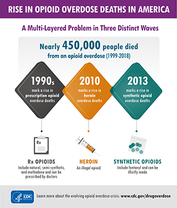

Focus on Broadband and Opioids
The opioid crisis has been ravaging communities and families across the United States for the past decade. In 2017, the opioid crisis was declared a public health emergency under section 319 of the Public Health Service Act. This crisis claims more than 187 lives per day. Evidence also suggests that the impacts of the opioid crisis have been exacerbated during the COVID-19 public health emergency with significant increases in alcohol and substance abuse and worsening mental health. The CDC has also announced an acceleration of overdose deaths during the pandemic and called for expanded prevention efforts. Recent research suggests that telehealth and other broadband-enabled solutions may provide critical tools in addressing the challenge.
According to the Centers for Disease Control and Prevention:
- More than 560,000 people in the United States have died from overdoses involving opioids since the epidemic began;
- The number of annual opioid overdose deaths remains more than 8 times higher than it was in 1999;
- There were approximately 69,000 opioid overdose deaths in 2020 and 82% involved synthetic opioids; and
- Provisional data reflects that the number of drug overdose deaths continued to increase during the pandemic, peaking at over 107,000 in the 12-month period ending in December 2021, the highest number ever recorded. This trend emerged despite underreporting due to incomplete data.
Of course, opioid overdoses may also be non-fatal. These non-fatal opioid overdoses place significant burdens on governments, health systems, communities, and families and may disproportionally affect rural and underserved areas. For example:
- There were nearly 290,000 hospitalizations and emergency department visits related to opioid poisoning in 2016.
- Most of these hospitalizations and emergency visits were paid for by Medicare, Medicaid, or the uninsured.
- Rural counties may experience resource shortages or limited economic opportunities that negatively affect access to health care services and health outcomes.
In recognition of the potential of broadband to help stakeholders respond to this crisis, particularly in rural areas, Congress directed the Federal Communications Commission to update its Mapping Broadband Health in America platform to include data on drug abuse. In response, the Connect2HealthFCC Task Force launched a novel analytic and consultative process to determine how best to intersect broadband and drug abuse data in ways that would draw meaning from the data and lead to actionable intelligence for policymakers and other stakeholders. We used an evidence-based approach to conceptualize the intersection between drug abuse and connectivity, with a particular focus on identifying areas where broadband-enabled interventions could make a difference in access to care or health outcomes.
Multi-phase effort
The integration of drug abuse data into the Mapping Broadband Health in America platform will be completed in at least two phases, and in the later stages, will involve sustained coordination with relevant sister agencies. Phase I – which is available at www.fcc.gov/health/maps – allows users to identify and characterize the specific broadband/opioid challenges at the local level, point to solutions, and spark collaborations. Specifically, in Phase I:
- Users can ask questions like, what is the status of Internet connectivity in areas where the opioid crisis is being driven by higher prescription rates (i.e., there may be a need to augment prescription drug monitoring programs and connectivity for health) vs. illicit drug use.
- Users can now display selected data on opioid mortality and prescription rates from the CDC with the fixed broadband deployment data from the FCC to generate customized maps at the national, state, and county levels that explore the intersection between drug abuse and Internet connectivity. In addition to fixed broadband access, the platform visualizes metrics on Internet adoption, rural broadband access, download and upload speeds, and number of broadband providers accessible to the majority of the population in a selected geographic area.
- Percent change in opioid mortality and prescription rates have also been included to enable users to visualize trends and identify potential emerging “hotspots” of the crisis, where broadband-enabled interventions might prove fruitful.
- Opioid mortality rates and trends have been broken down into several categories that reflect shifts in the primary type of opioid driving the crisis as it has evolved.
Opioid Mortality and Prescription Rates
Drug abuse variable Description All drugs Deaths and trends due to all drug overdoses for any reason (unintentional, suicide, homicide, or undetermined). Any opioid Deaths and trends due to overdoses for any reasons and involving opium, heroin, natural and semi-synthetic opioids, methadone, synthetic opioids other than methadone, and other and unspecified narcotics. Prescription opioids Deaths and trends due to overdoses for any reason and involving natural and semi-synthetic opioids and methadone. Synthetic opioids Deaths and trends due to overdoses for any reason and involving synthetic opioids other than methadone. Heroin Deaths and trends due to overdoses for any reason and involving heroin. Opioid prescriptions Prescriptions include any initial or refill prescription dispensed at a retail pharmacy in the sample and paid for by commercial insurance, Medicare, Medicaid, cash or its equivalent. Opioids include, but are not limited to, buprenorphine, codeine, fentanyl, hydrocodone, hydromorphone, methadone, morphine, oxycodone, oxymorphone, propoxyphene, tapentadol, and tramadol. - Users can also filter by rurality and overlay other relevant demographic and health/broadband variables, such as population, physicians, and Internet providers, to better understand the intersection between drug abuse and broadband.
- One ongoing challenge is the reality that community-level data are not available for all relevant data points; we hope to further tackle those pre-existing data gaps in later phases.
Broadband and Opioids Conceptual Model
To determine how best to intersect connectivity and opioids data, the Task Force began by reviewing the available literature on opioids and connected health. The goal was to inform a conceptual model for intersecting broadband and drug abuse data. Specifically, we identified key evidence-based factors that were important to better understand and address opioid abuse, overdose, and mortality at a population level – forming a potential roadmap for leveraging broadband and telehealth as part of the overall solution. These factors and their relationships are presented in the resulting Conceptual Model that underlies the current mapping platform. (Read more about our methodology here.)
- Opioid prescription (Rx) rates provide information on the number of prescriptions in a community that may indicate availability and exposure to opioids.
- Poor mental health days reflect the burden of disabilities and chronic diseases as well as health-related quality of life among individuals living in a community.
- Alcohol and other drug abuse may create an environment that enables opioid abuse and overdose.
- Access to mental health providers provides information on the availability of services for individuals to both seek preventive care and receive treatment for opioid abuse.
- Demographic and social factors, such as age, gender, income, and incarceration rates, may account for important differences in prescribing, use, and abuse of opioids that exists in a community.
- Community factors, such as economic indicators and rurality, may also account for important differences in access to care and treatment.
- Population groups such as veterans, Native Americans, and Alaska Natives may also experience a disproportional community impact from the opioid crisis.
The Conceptual Model also recognizes the evolving nature of the opioid crisis. The CDC characterizes the crisis in three distinct waves identified by the primary type of opioid driving the spike in overdose and mortality.
- Wave 1 (1990s): The crisis began in the 1990s with a first wave of deaths due to a rise in overdoses involving prescription opioids, including natural and semi-synthetic opioids and methadone.
- Wave 2 (2010 – 2013): This was followed by a second wave in 2010 with a spike in heroine-involved deaths.
- Wave 3 (2013 – present): The present wave is defined by a rapid increase in deaths due to synthetic opioids other than methadone (including fentanyl, fentanyl analogs, and tramadol) since 2013. Between 2019 and 2020, synthetic opioid deaths increased by 56% and now account for about 82% of opioid-involved deaths.
Potential of Broadband in Addressing the Opioid Crisis
Finally, the Conceptual Model integrates the potential of broadband as a powerful resource that may be leveraged to combat the opioid crisis, helping to save and improve lives in the U.S. For example, various studies have shown that use of telehealth can greatly improve access to and delivery of behavioral health services, including those for substance use disorders, but this full potential has not yet been realized. In addition, broadband-enabled interventions could potentially:
- Help to reduce overdose and mortality related to drugs and opioids;
- Support innovative pain management strategies;
- Facilitate robust, digital solutions for Prescription Drug Monitoring Programs;
- Increase access to mental health providers via telehealth (e.g., telepsychiatry, addiction recovery); and
- Generate cutting-edge approaches to chronic and acute pain for veterans.
We will continue to refine the conceptual approach going forward and welcome comments from interested stakeholders via email to engagec2h@fcc.gov.